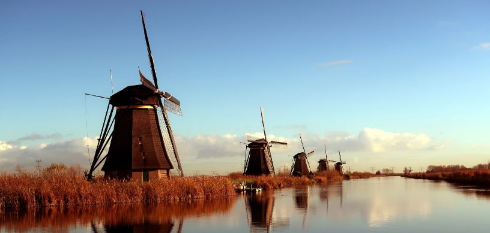

The Netherlands, situated in Europe, is a small yet influential country renowned for its cutting-edge approach to sustainability, its role as a hub for international diplomacy, and its progressive social policies.
The Netherlands punches well above its weight on the global stage in spite of its small size to wield significant influence in international politics and diplomacy. As a founding member of the European Union and NATO, the country plays a crucial role in shaping European policy and security. Its progressive stance on issues like climate change, human rights, and international justice is evident in its hosting of the International Court of Justice and its active participation in global climate agreements. With a keen focus on multilateralism and diplomacy, the Netherlands navigates international waters with a pragmatic approach ensuring that each country acts in the interest of the world as a whole and not based on its own selfish interests.
Why Study International Relations in the Netherlands?
- Due to its location, the Netherlands provides easy access to major European and international institutions, including the International Court of Justice and various offices of the United Nations.
- The Netherlands is home to a diverse, international community, offering a rich, global perspective which acts as a fertile ground to form an understanding of international relations.
- The International Relations programs in the Netherlands are taught in English, which fosters a truly international classroom experience.
- Universities like Leiden University, University of Amsterdam, and other top universities are known for their partnerships with international organizations.
- Programs in International Relations often include opportunities for internships and collaborations with international organizations which gives the student practical experience which will be greatly beneficial when seeking employment later on.
- The Netherlands is known for its progressive stance on global issues such as human rights, sustainability, and international law, aligning well with the values and goals of International Relations students.
- The country offers a high standard of living, with excellent healthcare, a strong infrastructure, and a safe, inclusive environment, making it an attractive place to live and study, regardless of where you come from.
Top Universities in the Netherlands to Pursue International Relations
Several top universities in the Netherlands offer strong programs in the field of International Relations. Here are some of the most reputable institutions and the respective courses that are offered:
- Leiden University – International Relations and Diplomacy
- University of Amsterdam (UvA) – International Relations, Political Science
- Vrije Universiteit Amsterdam (VU Amsterdam) – International Relations and International Organization
- Utrecht University – International Relations, Conflict Studies and Human Rights
- Radboud University – International Relations and International Law
- Erasmus University Rotterdam – International and European Law, International Relations
- Maastricht University – European Studies, International and European Law
What’s the Cost of Pursuing International Relations in the Netherlands?
Tuition fees to study international students range from approximately EUR 8,000 to EUR 20,000 per year, depending on the university and program. International students should also consider the cost of health insurance which comes around to about EUR 120 per month. Living expenses, including accommodation, food, utilities, and transportation will be around EUR 1300 per month. In total, international students can expect annual expenses up to EUR 25,000 per year which includes tuition and living costs.
Job Opportunities after Studying International Relations in the Netherlands
- Diplomat/Foreign Affairs Officer: Represent and manage relations between your home country and foreign governments.
- International Organizations (e.g., UN, EU): Work as a Program Officer or Policy Advisor on global issues and cross-country developmental projects.
- Non-Governmental Organizations (NGOs): Take on roles such as Advocacy Officer or Project Manager, focusing on human rights, infrastructure development, or environmental protection.
- Policy Maker: Engage as a Policy Analyst or Legislative Assistant, developing and analyzing public policies and laws that applies to the general public.
- International Business and Trade: Work as an International Business Consultant or Trade Specialist, handling trade agreements and other international market requirements for multinational companies.
- Journalism and Media: Become a Foreign Correspondent or International Affairs Reporter, covering global news and events.
- Conflict Resolution: Focusing on resolving disputes and building peace amoung countries or international groups through the art of diplomacy.
- International Development: Manage development projects in both developed and underdeveloped nations.
- Intelligence and Security: Analyze risks and security issues that threaten a country or region.
- Corporate Social Responsibility (CSR): Oversee CSR strategies and ethical compliance as a CSR Manager at a private company.
- Cultural Affairs and Exchange Programs: Coordinate cultural exchanges or manage international relations within cultural institutions as a Cultural Attaché.
FAQs:
-
What language are International Relations programs taught in? Do people in the Netherlands speak English?
Most International Relations programs are taught in English, especially at the master's level. More than 90% of the people of the Netherlands also understand and speak English making it an ideal environment not just for study, but also for living.
-
Can international students work while studying in the Netherlands?
Yes, international students can work up to 16 hours per week during the academic year and full-time during holidays. They need to check their visa requirements for specific conditions.
For further assistance or queries students can contact us, Edwise International and avail our wide range of services for students on destinations like UK, USA, Canada, Australia, New Zealand, Singapore, Ireland and many other countries.